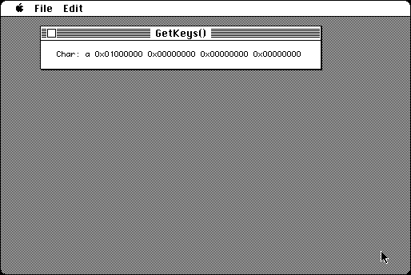

Download
getkeys.zip (16K) GetKeys 0.1 repackaged into a zipped hfs disk image and checksum file. The disk image can be mounted with Mini vMac.
getkeys.sit (16K) GetKeys 0.1 in the original format.
copyright: SPDsoft
mod date: Apr 3, 1997
license: public domain
from url :
SPDsoft
"Another Quick&Dirty Hack". Shows result from the GetKeys function. Could be helpful to some programmers. Source code is included.

If you find these downloads useful, please consider helping the Gryphel Project, which hosts them.
Here are the md5 checksums for the downloads, signed with Gryphel Key 5:
--------- GRY SIGNED TEXT --------- 686776edb2470315f79aad9a9a375ea1 getkeys.zip 3fdeb59b8598f5930ffb84aaa49d9e14 getkeys.sit ------- BEGIN GRY SIGNATURE ------- Gry/4Xa8CFcUzxdN/GFILtp9b1b3QeIBSZW4Kjdq8zCRr9aIIjU66YI7Rz+JJI1b LhMe0y+b4cu4SdgP0AV8Ml7ETVckqtk8cg5LJj925a+AVoaz9blFKXzdluy5Mnco ypIuNpqQ1vujuiT1FYF1FiBXWBQPZJgCrxsDdCuP63P/GJQMvGpNuN/Qa04Yutkc -------- END GRY SIGNATURE --------